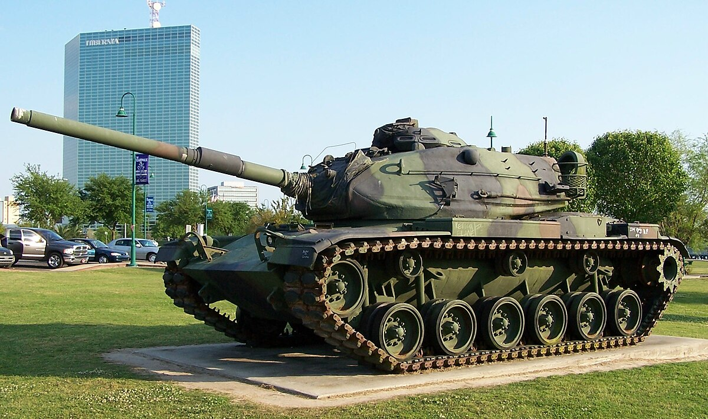

SAD u Hladnom ratu
Tijekom Hladnog rata, američka oklopna vozila odigrala su ključnu ulogu u strategiji odvraćanja i spremnosti za potencijalne sukobe s Sovjetskim Savezom i njegovim saveznicima. Glavna okosnica američkih oklopnih snaga bila je serija tenkova Patton (M46, M47 i M48) koja je dominirala ranijim razdobljem, dok je krajem 1970-ih uveden napredni M1 Abrams, koji je postao simbol tehnološke superiornosti.
Better dead than red...
M60 Patton - M60 Patton je bio prvi američki glavni borbeni tenk (MBT) uveden u upotrebu u decembru 1960. godine.[1] Bio je uveliko upotrebljavan od strane američke vojske i i njenih saveznika, ponajviše iz NATO-a tokom Hladnog rata. Povučen je iz službe u američkoj vojsci 1997. godine, te zamijenjen modernijim tenkom M1 Abrams. Današnji najveći korisnik ovog tenka je Egipat, koji koristi 1.716 primjeraka M60A3 tenkova, Turska je drugi korisnik sa oko 866 unaprijeđenih primjeraka, dok je Izrael treći korisnik preko 700 komada u upotrebi.
